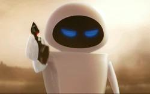
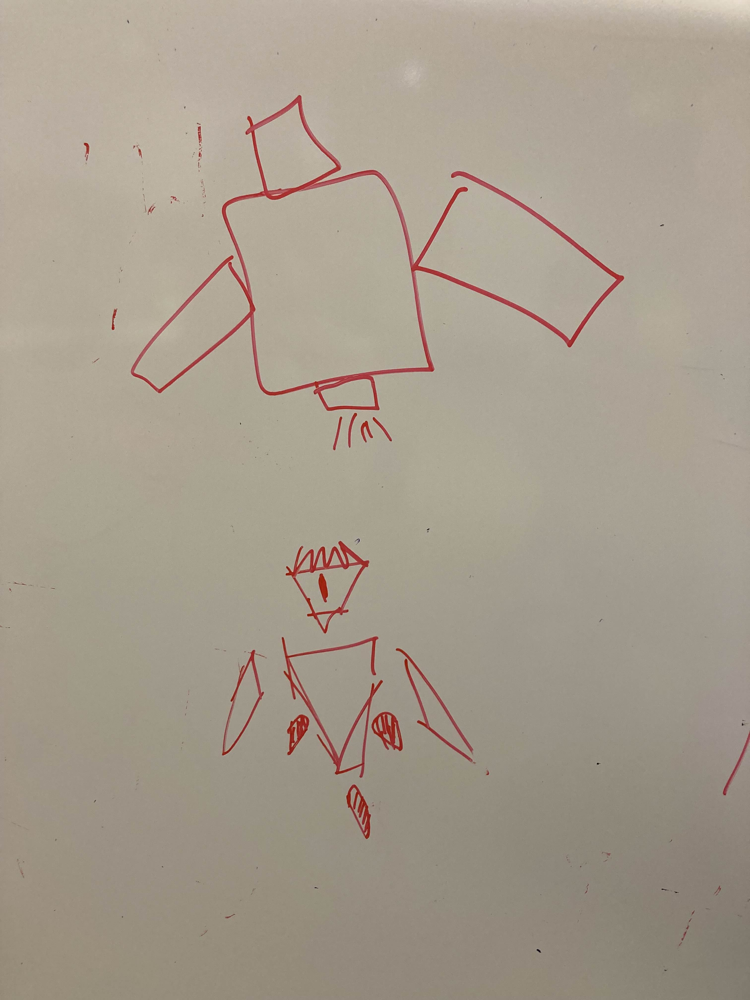

Week 1
To start we settled on some core ideas that we want in our game - giant enemies, fast/nimble movement, and weak spots. We decided to start with Unreal's
default third person character. We also decided that moving forward we will implement a dash inspired by Blue Fire, fast character acceleration, and a double jump.
To get to this point we first started by discussing what each of us want from the project. My main desire is to have some sort of interesting movement option
to make the player feel acrobatic and powerful. Some of the inspiration for this came from games like Horizon Zero Dawn (sliding under creatures and slowing down
time makes you feel powerful and maneuverable) and The Messenger. Bill wanted to have a more Tunic-like experience with a large enemy, weak points, a dodge roll,
and stamina. Sarah expressed interest in ranged combat as well. To figure out how we could best include all of our ideas we referenced a lot of games.
We spent a lot of time discussing acrobatics and large enemies. We looked at games like The Pathless, Tunic, Attack on Titan, Shadow of the Colossus,
Monster Hunter, Blue Fire, Wind Waker, Sekiro, Shadow Generations, The Messenger, and Elden Ring. We talked about focusing primarily on melee combat,
but potentially having a ranged option that is similar to The Pathless, depending on how much time we have. We also decided that doing something with
too much verticality (like Shadow of the Colossus) would be harder to implement. This is where we decided that a dash like the one in Blue Fire would
be helpful in providing the feeling we want without taking the player too high. We also used a couple desk toys to determine more about the scale of
our enemy compared with our player. To keep things simpler the enemy will be low to the ground but large.
We then started tweaking some of the numbers on the character controller we had. We increased the speed, acceleration, and air control of the player
by a lot. This helped provide a better starting point for the feeling we're going for, but we need to implement more abilities to see how they contrast
with basic movement before we can get a clearer picture of how it will feel. We are also going to get a model into the engine quickly to help us establish
the scale of our enemy in-game.
Week 2
In class this week we discussed movement, collision, and state for our game. We came up with a lot of ideas such as having a stagger state for the boss,
having the player's dash be a teleport instead, having various invincibility states for the boss and player, and having light/heavy attacks that have
different effects and ranges.
Outside of class we further discussed our character's dash. We decided that we wanted to make the dash a teleport like the one in Tunic
(video).
This will hopefully better facilitate the feeling of nimbleness that we want for our player. We also wanted to encourage the player to dash with more precise
timing and aim, so we want to create a hitbox when the player starts their teleport and when they reappear. This has not yet been implemented.
I helped implement the teleport. Currently the teleport stops if the player would run into something, but later we may consider allowing the player
to teleport through objects and only stopping them if they wouldn't make it all the way through. There are several ways that we could do this. The
biggest challenge associated with implementation so far is how to teleport through objects accurately while providing good camera movement. Currently
the player moves incrementally so that the camera follows along smoothly, but that makes the implementation of teleporting through objects a bit harder.
What I might need to do is use a line trace to determine if the player will reach the target location and if they wouldn't make it completely I'd step
back until we find a place that the character can appear. There are several possible implementations, but for now I can leave the teleport as the simple
implementation and take our design step-by-step.
Week 3
This week we implemented some extra mechanics and we also discussed our character more. As far as the character goes, we had previously decided that we wanted a floating robot as our character to make some of our implementation easier. However, we needed to further discuss what that actually looked like because a couple of us were picturing something more bulky, which went against the agile feeling we want. We were able to use some drawings and references to clear up what we wanted. The lower robot in the picture is more of what we're looking for, or something like Eve from Wall-e.
 After we got that figured out we discussed additional mechanics. We wanted to provide the player more control, especially in the air. A clear choice was a double jump. We referenced games like Jak and Daxter and Super Mario Galaxy to discuss a double jump that doesn't necessarily provide a lot of extra vertical movement, but keeps the player in the air longer and provides extra mobility. We also discussed a fast fall mechanic based on Super Smash Bros. (video). This can let us do things like making a higher jump or an automatic hover jump without it being too floaty, and it also lets us constrain the teleport to when the player is grounded without making that too restrictive. It can also feed into certain boss attacks. I was inspired by a boss in Sonic Adventure 2 (video) where you need to jump and duck, but often it is difficult because it takes too long to get to the ground. We could take advantage of our fast fall to give gameplay opportunities like that. After discussing these ideas, we drew out some ASDRs to get a better idea of what we're looking for:

We then had some issues with getting the engine to work with a particular plugin that we wanted to use to make implementation easier later on, so my time on the implementation was mostly focused on helping the team get that working on all of our machines.
Week 4
While we were looking at everyone's games in class and talking about our game with teammates I came up with a fun idea for an attack (and I think a couple
of my teammates came up with it at the same time too). We previously discussed having a rocket fist that the player can launch out to deal damage. We thought
it would be fun if the player could teleport to their rocket fist to close the gap between enemies and deal extra damage. I was partially inspired by Shadow
Generations (yet again).
(video).
We split the task into a couple pieces and I was in charge of handling the projectile while someone else dealt with aiming. If the projectile hits something
there is a slight delay and the player is teleported to the projectile. We added an "arm" mesh to the player (on top of the current skeletal mesh until we
are ready to swap it out completely) that disappears when an arm projectile is launched, giving the illusion that the arm itself was launched. It reappears
when the player teleports. Below is a video of my part before the rest was added. I also helped combine the aiming and firing abilities, and a video showing
the result of that combination is the next one down.
Week 5
This week, as assigned, we focused on adding some polish effects to our existing abilities. I wanted to work on some VFX and SFX for the teleport,
along with a camera slide and some hesitation for the rocket fist teleport. As a reference for the VFX, I wanted something that would convey an
in-and-out motion. We looked at seismic charges from Star Wars (https://www.starwars.com/video/seismic-charges Links to an external site.) along
with two teleport effects from Super Smash Bros
(video) and
(video).
I ended up taking the most inspiration from Mewtwo's teleport in Super Smash Bros. I've never used Niagara up until this point, so my ability to
implement something good was limited, but I was able to approximate something that I like. After I implemented the VFX, I made sure that the mesh
was hidden correctly and that there was a slight delay between when the VFX started and when the character actually moved. The first video below shows
how the rocket fist looked after getting the teleport set up.
After getting the VFX and hesitation set up, I tried to come up with some good SFX. I tried making a 'schloop' sound with my mouth to see if that
worked, but it didn't have the right feel. I also tried using my udu (a type of drum) since it has a very distinct, bouncy sound, but it felt too
cartoonish and out of place. The last thing I tried was reversing the recording of my udu, and that gave a really good sound that I like for the
teleport. After setting up the hesitation, the VFX, and the SFX, I decided that the camera slide was unnecessary and would take
away from the feeling I wanted out of this teleport. I think it would make the motion feel slower without the instant cut.
Next, I applied the same effects to the teleport dash, so that whenever the player teleports it acts consistently. And the last thing I did was to fix a bug that made it so that the player's "arm" wouldn't aim properly. This helps the aiming feel a lot better. Compared to how the ability looked before adding these changes, it definitely feels a lot better. One thing that's hard to notice with all the new effects, is that the slight hesitation adds a lot to the feel of the teleport. It really helps with the impact of the travel. Working on this really showed me how important it is to add at least some level of polish to your game early. The teleport was fine initially, but very bland. These effects make it feel a lot more fun.
Week 6
This week we did playtesting with members of other teams. Because of this playtesting, I was tasked with fixing collision bugs with the rocket fist. The projectile would occasionally get stopped by the player, and the projectile was also just a white cube when we wanted it to be the robot's arm. Furthermore, it was common to teleport inside of objects. A big cause of this was that the projectile would spawn slightly in front of the player and because of that it would travel through objects when you were too close. It still occasionally phases through objects, but the reason for this is unclear and it's not easily reproduced. The arm projectile now launches from the location of the arm (which also just looks way better), and now that we have a character model we use an actual arm model for the projectile and hide/show the arm accordingly. I tried a few other things as well to reduce the frequency of getting teleported inside an object. The player now is teleported 95% of the way to the arm before traveling the last distance with a sweep to make sure it doesn't hit anything. This isn't a perfect solution, but it does seem to reduce the frequency of getting stuck. I also completely redid the collision of the projectile so that it would no longer hit the player's model. It turns out that making sure you don't teleport inside of anything is fairly difficult. I looked at various solutions, and they include using a nav mesh (which we can't do for airborne teleportation), doing complicated line traces (which are also hard with the projectile), and more. I think the biggest issue I'm currently facing with the intermittent clipping bug is that the arm projectile sometimes misses a collision and moves too far, which causes the problem. I'm going to investigate it further if it hinders gameplay.
Here's what it looked like before these fixes.
Week 7
This week we discussed how we wanted to move forward with our boss based on the provided requirements. We decided that the enemy that encourages the player
to be more thoughtful would be the main boss with its attacks, and the freestyle enemy would be the weak points that will be attached to the boss, which can
currently be attacked independently from the boss. We also made more decisions about how the weak points will work. The weak points will have functions to
be exposed and hidden, and they'll send messages to the boss when they take damage and when they are destroyed. The boss will have an overall health pool
and when different weak points are attacked it will lose health. So they player doesn't necessarily need to destroy all the weak points or even destroy any
of the weak points, provided that they are able to deal enough damage to the boss through the weak points. Some weak points can give damage bonuses as well
this way, and we can prevent players from using a single weak point to defeat the boss by having it get destroyed after a certain amount of damage. There
could also be something like 3 "hard" weak points that give bonus damage that the player could destroy to win, and 10 "easy" weak points, and the player can
choose which ones they want to attack. The idea is similar in many ways to Horizon Zero Dawn, where enemies have a variety of weak points that can be destroyed
and the player can choose how they want to go about it.
We also decided that we'll add some more VFX and juice to the game in this step. In particular we assigned a teammate to make a hit VFX for the weak points.
The video below is of my weak point implementation. For testing I set up the weak point to change between exposed/hidden once per second. Also for testing
the weak points take damage when the player collides with them (some player attacks are still being set up and will be in the build this week). After the
weak point is destroyed, it changes to a new mesh to indicate this. I think this will add some nice flavor to the weak points and it provides a lot of
flexibility for how we want our boss to look, which we're in the process of deciding (giant robot snapping turtle?)
Week 8
This week we discussed adding UI/UX elements to our game to better communicate with the player. We decided that we wanted to add several diagetic UX elements to communicate with the player when their hitboxes are active, when their dash cooldown is complete, and how much health the weak points have left. Active player hitboxes will be shown by activating VFX around the player's fists. The dash cooldown will be indicated by a light somewhere on the robot (probably the head), similar to R.O.B. from Super Smash Bros. (video). To show how much health the weakpoints have left, there will be cracks that appear on the weak point material that get worse as it loses more health. I was in charge of handling the weak point cracks. I created a very simple cracking texture and applied it through dynamic material instances. Whenever the weak point is damaged, it also checks if it needs to update its materials to have more cracks. Initially we were going to only add cracks at 50% health and 25% health, but after doing this it felt very uneven, so I added a third level at 75% health. This makes the state of each weak point much more readable. We are planning to add some bonus damage to the boss when weak points are destroyed, so having an easy way for the player to check which weak points are closest to being destroyed will hopefully help them prioritize their efforts.
Week 9
This week we needed to give the player an opportunity for a power fantasy. To me we already had something relatively close to this - we have boss weak points that the player can attack and use them to deal a lot of damage to the boss. The big key though is making it feel that way. In a lot of Zelda games bosses have weak points that the player gets an opportunity to attack repeatedly. What makes this fun is the challenge of getting to this point and experiencing all of the effects on the boss while you do this. It's not a power fantasy if the hits don't feel good. Other team members are working on other aspects of this, so I took the opportunity to add more polish to the weak points.
To start, I decided that we should try using hit stop. When looking around at hit stop I saw a recommendation to add shake as well (like in Super Smash Bros) so I did. I decided to add shake in all 3 axis too since that gave a lot more impact to the hit.
Next I thought we'd want additional VFX. I started out with the idea of having sparks fly when the weak points are hit. I ended up making a very large particle burst. Making it huge was initially an accident, but I liked how it looked so I kept it. The idea is that as the weak points are hit there are bits flying off, which also is reinforced by the cracking. I think this VFX is a bit too dramatic to give off that specific idea, but it feels good and gives extremely clear feedback so that they player knows they're doing something right.
The last thing I wanted to add was sound effects, since those make an incredibly large difference to feel. I tried to record a couple sounds for the hit but couldn't come up with something I liked, so I decided to look at the sound library that the University has access to. I found a pretty good impact effect that I trimmed up for use in the game. It's not perfect, but it definitely improves the feel of hitting a weak point. I wanted to go for a more techno-feeling sound because our character is a robot, and it seems logical to me that our boss might be some sort of technological creature. And with how they are currently set up, the weak points are very artificial-looking objects, which is further emphasized by an artificial sound. I think even if these sound effects don't quite work as-is, they're close to something that we'd want.
I recorded a "clink" sound for when you hit the weak point in its invulnerable state to give the player more feedback in that situation, but our current system only sends events for damage, so I decided to put that off for now to be able to focus on other aspects.
Week 10
This week I implemented an upgrade for our rocket arm mechanic and did some design to provide an introduction to our game and that mechanic.
My main idea with the upgrade is that I wanted it to be very clear that the player should interact with it. To achieve this, I set the object to rotate, put it in a translucent sphere to make it look like an item capsule like from those machines at grocery stores, and put UPGRADE in all caps above the object. When the player overlaps the upgrade it disappears with a particle burst and a sound clip plays saying "upgrade unlocked". I tried to do my best "video game announcer" voice.
Next I wanted a logical way for the player to get that upgrade. I decided there should be something to encourage the player to use other abilities before getting the rocket arm. It made sense to have a weak point connected to some kind of object that would break to reveal the upgrade. I changed our weak points to optionally have an object tied to them that will be destroyed when the weak point is destroyed. This could be used in other encounter design as well if we want to in the future (each of the boss's weak points could be tied to a wall that holds back a group of enemies so that they attack the player after each weak point is destroyed). I then made the player start in a pit that can only be escaped using the rocket arm. So the only option is to hit the weak point until it breaks, then the power up is clearly visible, and the player can use it to escape and continue on.
It's a rough draft of course, but to me it gives a pretty clear indication of what the player should do at each step. The only tricky part is I need something to tell the player which buttons to press to use the rocket fist. The only thing left is to finish implementing the boss fight in a way that encourages the player to use the rocket arm.